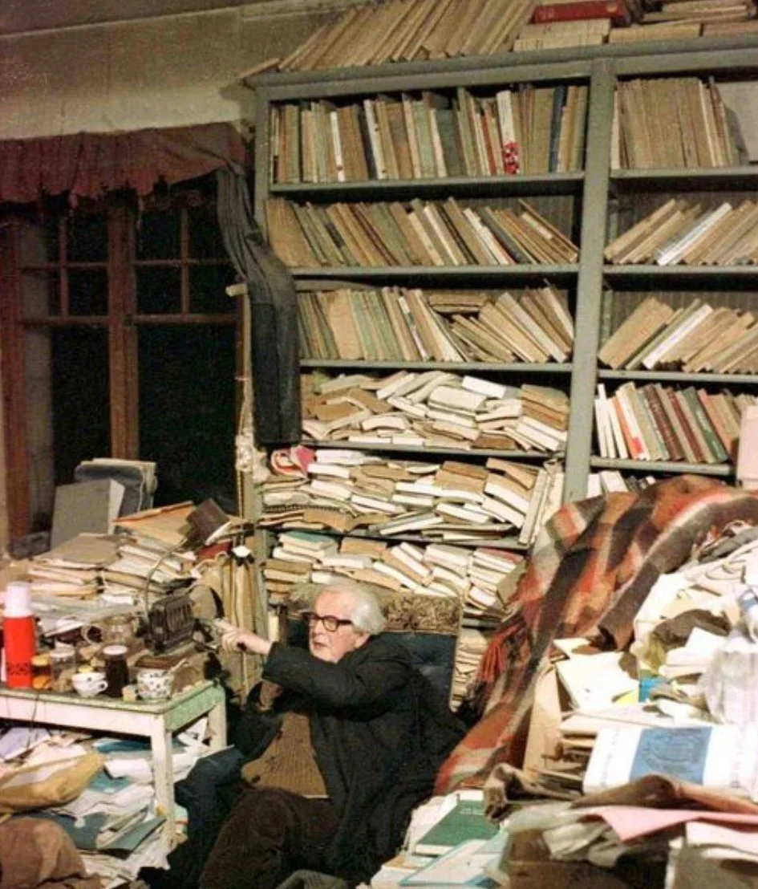

Tumbleweed Words
One piece of flash fiction or poetry.
Free, every week.
“Everyone wears black so hard you don’t notice
there are differing shades.”
Free · Weekly · No spam · Unsubscribe any time
From the SASE to online portals and the impersonal void of a digital submission. A working writer on what we lost when literary submissions moved online and what ‘published’ means in a world where everyone has a CTA button that once clicked, puts their work into the world instantly, ready for the now generation to devour, if SEO optimised for visibility.

In 2000 I had established a daily writing routine. Take sounds and actions and conversations from the streets I travelled and later, work them out in a moleskin until a story or poetry took shape. I would then take these words to a desktop computer that hummed, open a word document, and begin to iron out something I eventually felt read complete, was worthy of someone’s time. The process was simple but required attention and dedication. Writing first in ink or pencil slowed my mind enough to think about what the phrase or rhyme or sentence was trying to achieve. This process made me aware that with story, you have to push things forward. Once complete, I would print the story or poem at a local library that charged ten pence per page. I would have three copies by the end of the process. One for the literary magazine or anthology I was looking to submit to. Another to keep for myself in a folder I’d look back on years later with fondness (sometimes). A third copy I would put in a separate envelope, sealed and unopened, I then stamped and posted it to myself as a form of copyright.
People called the third envelope the poor man’s copyright. To this day, I’m not sure if copyright works this way. You couldn’t exactly take a sealed envelope into a court and prove you wrote anything, one supposes. But aspiring writers I met at open mic nights said they did it. The act gave the work some weight and made my words feel valued, like a handshake at the end of a meeting. And it added a form of punctuation to the process. The copy that went to a literary magazine included a covering letter (not bio under 100 words) typed out on paper.
If my work was going overseas, usually to America, two stamps for Air Mail were included. And of course, the self-addressed envelope. Without an SASE, there would be no reply. But with it, an editor would often write back with some brief feedback if rejected, a witty remark about friends over the ponds. Em dash abuse jokes at the expense of Emily Dickenson or a quote by Dickens or Shakespeare to close. There was a nostalgic romanticism about the whole thing. It was a process that I enjoyed. It connected me to humans working in publishing, made me imagine them burning the midnight candle, overdosed on caffeine and nicotine in a dark room full of piles of paper. Back then the process put the art form in a physical world that required movement if wishing to be read or considered for publication. The submission left my desk and travelled on a road that either landed on an editor’s desk or slush pile. I waited for more inspiration than a response. Back then volume mattered, as a young man I understood cutting your teeth as a writer meant a million bad words.
Back then, at the turn of millennium, you sent stories into the world and looked forward to seeing the postman. But only after going near blind trying to read The Writers’ and Artists’ Yearbook tiny font. You carefully looked for sentences like ‘interested in literary fiction’ or ‘accepts a handful of poetry’. When I found sentences like these, I underlined the magazine or agent or publisher’s name and told myself, ‘this could be the one’. This yearbook was the holy grail of publishing contacts back then. It shit on the countless top 50 literary magazine websites and had an aesthetic that reminded me of newspaper ads. Black and white functional language, almost keyword in nature. This thick red brick full of agents, publishers and magazines took solicited and unsolicited work from established and aspiring writers. It saved a writer time by allowing editors to simply state what they didn’t accept for consideration. The Granta entry was always near the top of my wish list. So was Magma, Ambit. American magazines were there too, if you could justify the postage: Glimmer Train, NYQ, The Paris Review (lottery ticket). I began to understand the prestige of these magazines through the writers I admired who had first published there. Giants like Chekov and Hemingway. Literary types who had helped establish brands like The New Yorker at a time when the short story was still considered a popular art form.
I would buy (when able to afford) previous issues of magazines I had found to better understand what each editor preferred. I wrote a personal cover letter that mentioned a piece in their last issue I admired. Sometimes I signed off in ink, why? I don’t really know. It felt more professional, personal, esteemed. I liked letters and it felt like a letter because it was an actual letter. A kite held by the string of a postal service. The reply came in an envelope I had bought in bulk at the local post office. Brown was my favourite colour. I liked the strange almost cheese-like scent of the paper. Licking the sticky bit, stamp, kissing it goodbye before pushing it in a red letterbox. It gave me a sense of hope for my work. Until the response came weeks or months later.
I still have some of those editorial letters. One from an editor in San Francisco springs to mind. The publication closed in 2003. But to this day his personal note runs half a page. He didn’t accept the story. But wrote about the opening paragraph needing to begin with more action and less description. There was conversation set in dialogue he liked for its sharp observations about dating and quick wit. There was a line in the middle that didn’t quite land, too abstract for literary fiction. He signed the cover letter with his initials and told me I had talent and to keep on writing. He’d done this for free and on his own time, between editing the actual magazine and probably working another job to pay for the printing. Moments like these mattered as much to me as actually getting something accepted for publication.
A few things. In 2010 a company called Submishmash started accepting literary submissions through a web form submission portal. They later renamed themselves Submittable in 2012 and joined Y Combinator that same year. By 2017 they had raised five million dollars in venture capital. By 2022 they had raised forty-seven. The infrastructure of literary submissions, the thing that had been a postal ritual for decades, now ran on the same kind of code, algorithm as Uber and DoorDash. At the same time, print magazines started closing shop. There was now a more immediate, cheaper and instant way to form and reach an audience. The US Census Bureau put periodical publishing revenue at $40.2 billion in 2002 and $23.9 billion in 2020. A forty per cent decline in eighteen years. The number of US magazine companies fell thirty per cent between 2012 and 2020. UK literary magazines, never well-funded, hollowed out even faster. I noticed it in my local newsagents. The lack of literary works on the shelves, a dwindling circulation and thinning yearbook rattled me. The majority of small to medium publications, the ones that allowed an aspiring writer to get on the literary publication ladder, went defunct. Others moved online, survived with heavy focus on marketing, branding and domain authority, and stayed there. A handful of publications carried on producing print at smaller circulations for shrinking subscriber bases. But over time the internet overcame them. Like waves lapping over a pier the brick of print was drowned. Atoms replaced by digital.
Online publications filled a space created by an instant need for gratification. Substack and Medium and WordPress were born. Small literary sites that called themselves journals, adopted names that used to feel literal. Personal blogs that called themselves magazines. The barrier to founding a publication collapsed from years to an afternoon and a domain name. The barrier to submitting also collapsed. You could send a story to twelve magazines in an hour from your kitchen table and be sent an email when a response was ready. You simply didn’t have to think about any of the process as much as you used to. In fact, you barely had to think about it at all.
This sounds like progress and in some ways it was. But something else happened too.
The replies stopped being sent by letter. In many cases they stopped completely. Replaced by a notification email that often read ‘rejected’ followed by a note stating the editorial team were overwhelmed by submissions and cannot personally respond. Was everyone a writer now? Was poetry a heartfelt message you sent to a lover via Facebook? Was story a stream of consciousness blurb you posted on your blog? I didn’t know what the fuck was happening.
I did know you largely submitted through Submittable now. The status updates from “Received” to “In Progress.” How they stayed there for months, no motion, interaction, exchange. Sometimes they stayed in progress for years. Then one morning you get an automated email. After careful consideration, we regret to inform you…
No more envelopes, handwriting, personal slips with feedback on them from an editor with a nickname they shared freely as sign off. Submittable lets editors send rejection in bulk, batches. They could tick a box and blanket reject. They could click a button to accept. A hundred writers received the same automated paragraph at the same minute, while the chosen few got something templated but more personal. ‘We are pleased to inform you,’ quickly became the most sought after opening sentence in the submission process. It happened overnight. A writer I follow on a literary forum described checking Submittable as “a little like Chinese water torture.” They must have grown from the age of the envelope.
Charles Bukowski submitted to Story magazine for a year and a half before they accepted “Aftermath of a Lengthy Rejection Slip” in 1944. He was 24. He kept submitting after that. Through the 1950s and 60s he sent work to every literary venture he could find, from conservative quarterlies to avant-garde “mimeo” undergrounds. He became the most-published writer of the decade in the little American magazines. Targets. Olé. Intermission. Renaissance. Down Here. Most of these magazines printed runs of two hundred copies. Bukowski filled them.
Bukowski wasn’t sending his work into a void. The editors at those magazines wrote back (he has a published book of letters proving this). They sent letters that ran for pages. The editor of Down Here once published thirty pages of Bukowski’s correspondence as a feature. A feature! More magazines ran excerpts from his letters as the contributor’s note. The submission was not a transaction between author and platform. It was the start of a working relationship between a writer and an editor.
In the olden days, being published meant something. It was a physical act that led to a physical object. A magazine your friends could buy. An ISBN if the magazine had one, or at least a copy you could hand someone in a pub, would be immortalised. Your work sat next to other people’s work inside a finite artefact that had a limited number of copies. Somewhere out there in the world coins and notes were exchanged for paper. You could lend it out to a friend. Forty years later you could maybe even find it again on eBay.
Now work largely appears via a URL. The URL contains the date and a slug. The slug is sometimes a name, occasionally a contraction of it, often nothing recognisable at all. The URL might exist in five years. It might not. Magazines that have published me online have, in the past, simply gone offline. The publication evaporates. I keep a copy on a hard drive but the copy for the world is gone in an instant.
What does “published writer” even mean if the publication can disappear or the publisher is the actual writer? Where is the process, the validation earned through an editor who reads millions of words a year and publishes less than 5% of them?
The question scales upward. If a poem of mine goes up on a site that closes, was the poem ever published? It existed at the URL for two years. People read it. Someone left a comment. Then the magazine ran out of funding, and the editor took down the site and the comment vanished, and the URL returned a 404 error. The submission still happened. The rejection still happened. The acceptance still happened. The appearance—it happened. But there’s nothing to be seen.
I started Tumbleweed Words partly because of this. The work goes up on a site I own. If anything’s going to disappear then it should be me who pulls the plug. And yes, I keep submitting to literary magazines. As long as they exist, I will do so because to me, this is publishing. Validation of a writer’s work, for better or worse, is in the hands of professionals whose job it is to receive and take time to read and then choose who they publish, not the writer.
If this landed, buy me a coffee.
Free · Weekly · No spam · Unsubscribe any time
Tumbleweed Words
“Everyone wears black so hard you don’t notice
there are differing shades.”
Free · Weekly · No spam · Unsubscribe any time